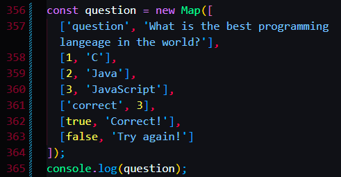

Another way of initiating new maps
Convert objects to maps:


First consolelog the question
Then use a loop to loop over the question map, using the two parameters key and value, which represents the key and the value of the map
Then use an if to neglect the other unuseful keys, to screen out the keys wanted